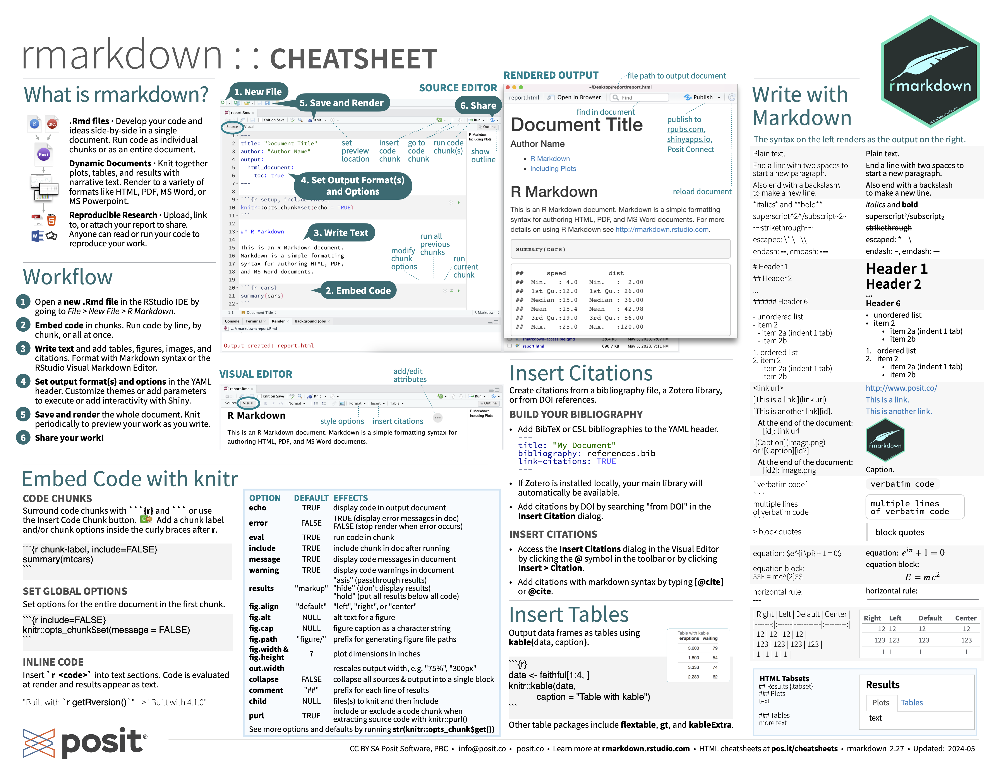
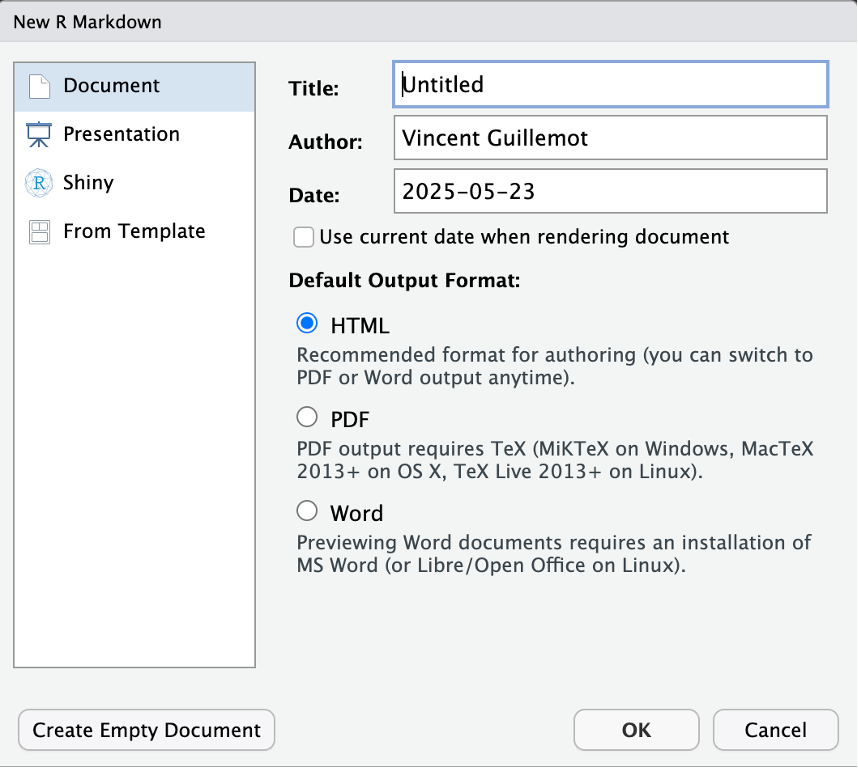
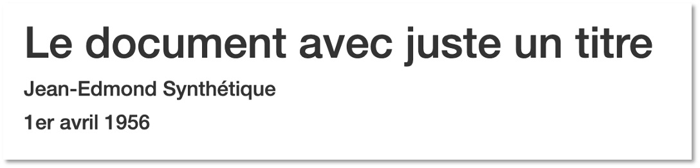
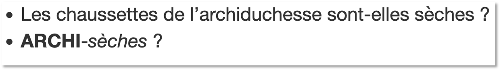
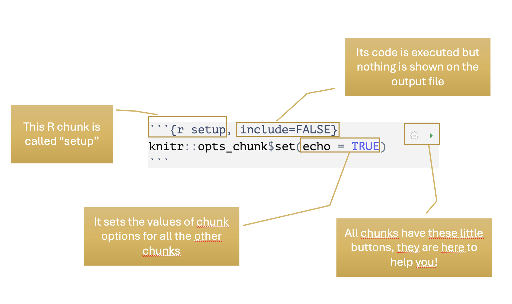

Reproducible Reports with R Markdown
Amaury & Vincent
Cheat-sheet
Recto
Verso

Essentials
YAML, Markdown and chunks
R Markdown

YAML
---
title: "Document title"
author: "Lewis Forwarder"
output: html_document
---- Starts with
---, ends with--- - Intuitive syntax \(\rightarrow\)
field: value - Outputs: HTML, docx, pptx, (pdf)
Markdown
Intuitive language to write, in plain text, a document that is transformed into a report (in Rstudio, go to submenu “Help > Markdown Quick Reference” for a quick tour).
Emphasis
*italic* **bold**
_italic_ __bold__Headers
# Header 1
## Header 2
### Header 3Unordered List
* Item 1
* Item 2
+ Item 2a
+ Item 2bOrdered List
1. Item 1
2. Item 2
3. Item 3
+ Item 3a
+ Item 3bAnd so much more!
R Chunks
Your code goes in “R chunks”1.
Other features
- PDF: \(\LaTeX\)
- Maths: \(\LaTeX\)
- Customized HTML documents: CSS (ou SCSS)
- Diagrams: mermaid or GraphViz
- Other high-level programming languages: Python, Julia, SQL
- Other: bash, Rcpp (C++), Stan (Bayesian statistics), etc.
YAML
[Y]et [A]nother [M]arkdown [L]anguage
---
title: "This should be a useful title"
author: "Pr Jean Bon"
output: pdf_document
---- Starts with
---, ends with--- - Intuitive syntax \(\rightarrow\)
field: value - Outputs: HTML, docx, pptx, (pdf)
- Also: it is optional!
Most useful fields
title: title of the documentauthor: your nameoutput:html_document\(\rightarrow\) is the easiest to useword_document\(\rightarrow\) is very convenientpdf_document\(\rightarrow\) requires \(\LaTeX\)
In Rstudio
File > New File > R Markdown…
- create a document,
- change the default values,
- change
- headers,
- text,
- R code,
- save document as an Rmd file.
- Click on “Knit”

Exercise 1: header alone
Create an R Markdown document that will create the following html output.
Markdown
Examples
Twinkle **twinkle** ~little~ _star_
$$ y = \frac{1}{2\pi} e^{x^2} $$
* One item
* Two itemsTwinkle twinkle little star
\[ y = \frac{1}{2\pi} e^{x^2} \]
- One item
- Two items
In Rstudio
Exercise 2: only text
Create an R Markdown document that will create the following html output.
Warning
There is no YAML header!
R Chunks
Regular chunk

Setup chunk
My advice
- create your chunk by clicking on the “+c” button
- customize its options by clicking on the wheel
- write your R script (execute often)
- knit often
Warning
Your current environment is different from the temp environment that is created to generate the report!
Exercise 3: YAML + Markdown + R
Create an R Markdown document that will create this (\(\rightarrow\)) output.